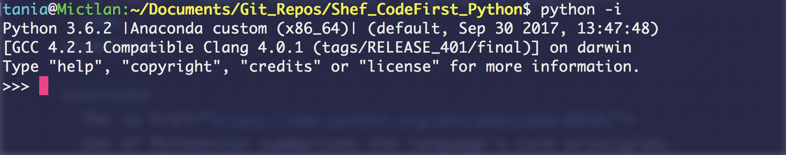

Session 2: User input, functions, loops, conditional statements
The session with the long title
Christopher McIntyre
@cgmcintyr
Recap: Using Python from the terminal
Open a terminal (Mac) or Git Bash (Windows) and open Python
in interactive mode by typing:
python -i
Your terminal will look similar to this:

Recap: Creating a script
Open your text editor and create a new file called
session2.py
that contains the following:
print("Hello World!")
and save the file.
Recap: Running your script
- Open your terminal if needed
- Make sure you are in the file location
(if you need to make sure type
ls)
- Type the following command
python session2.py
Your script should reply with Hello world
Recap: Strings and Variables
String: a collection of characters denoted by " "
Variable: a named location that stores some data
Let's change our code to print a variable
that stores a string representation of your name.
```python
name = "Your name here"
print("Hello {}!".format(name))
```
Now run your script from the terminal:
```bash
python session2.py
```
Your script should reply with Hello Your name here
Recap: Changing variables
The contents of a variable can be changed any time after it has been declared
```python
name = "Your name here"
name = name.upper()
print("Hello {}!".format(name))
```
Now run your script from the terminal:
```bash
python session2.py
```
Your script should reply with Hello YOUR NAME HERE
Recap: Github
Lets push your code to github to keep a history of your changes.
We can use GitKraken to do this.
User input
A program is made much more useful by allowing a user to interact with it
We can use the input method to get a user's name.
Open your session2.py file and replace the contents with the following
```python
print("What's your name?")
name = input()
print("Hello {}!".format(name))
```
Now run your script from the terminal:
```bash
python session2.py
```
Functions
Programming the same task can get boring
A function allows us to reuse code by giving a
name to a block of code
Create a new file called my_first_function.py and enter the following
```python
def hello_world():
print("Hello World!")
hello_world()
hello_world()
hello_world()
```
Now run your script from the terminal:
```bash
python my_first_function.py
```
It should print out Hello World! 3 times
- def tells python we are defining a function
- hello_world is the unique name of our function*
- () the brackets tell python this function has zero arguments
- : the colon tells python the indented lines below this line are a code block
- hello_world() is how we call our function
*be careful not to overwrite default python functions like
print or sum
Arguments
Arguments are values passed into a function
- Sometimes we have a block of code we want customise when we call it
- Arguments go in the brackets () when calling a function
- e.g. print("hello") prints the value of its argument, which happens to be the string "hello"
Let's start some arguments!
Let's see how we can use arguments ourselves
Create a new file called more_arguments.py and enter the following
```python
def add_two_numbers():
number1 =1
number2 =2
answer = number1 + number2
print("{} plus {} is {}".format(number1, number2, answer))
add_two_numbers()
```
This is a function with zero arguments (the brackets are empty in the definition)
Edit more_arguments.py and replace the old function with the following
```python
def add_two_numbers_from_args(number1, number2):
answer = number1 + number2
print"{} plus {} is {}".format(number1, number2, answer)
add_two_numbers_from_args(5,10)
add_two_numbers_from_args(1,11)
add_two_numbers_from_args(1,12)
```
This is a function with two arguments
Arguments are named variables only available in the function
Returning stuff from functions
Functions do stuff like crunch numbers or manipulate data, and can then return the information they calculate
Create a new file called returning.py and enter the following
```python
def add_two_numbers_and_return_value():
number1 =1
number2 =2
answer = number1 + number2
return answer
returned_value = add_two_numbers_and_return_value()
print (returned_value)
```
Extra challenge change the function to return the result of adding two arguments together
Lists are used to store a list of items
```python
empty_list = []
numbers = [0, 1, 2, 3, 4, 5]
fruits = ["pineapples", "oranges", "bananas"]
mixed = [15, "sunshine", "jumper", 4, "sky"]
```
Lists are:
- List items go between square brackets
- Items in a list are separated by commas
- Strings in a list must be in quotation marks
You can access an item in a list by using its name and its index number, like this:
```python
print(fruits[0])
```
In the world of programming, the first item in a list is always at position 0 (its "index" position). This means that [0] is the first item in the list, [1] is the second item, and so on.
For loops can be used to perform actions on each element in a list
```python
my_shopping_cart = ["cake", "plates", "plastic forks", "juice", "cups"]
for item in my_shopping_cart:
print (item)
for x in my_shopping_cart:
print("hello!")
print(x)
```
Create a new file called logic.py and enter the following
```python
number =input("Enter a number between 1 and 10: ")
number =int(number)
if number > 10:
print("Too high!")
if number <= 0:
print("Too low!")
```